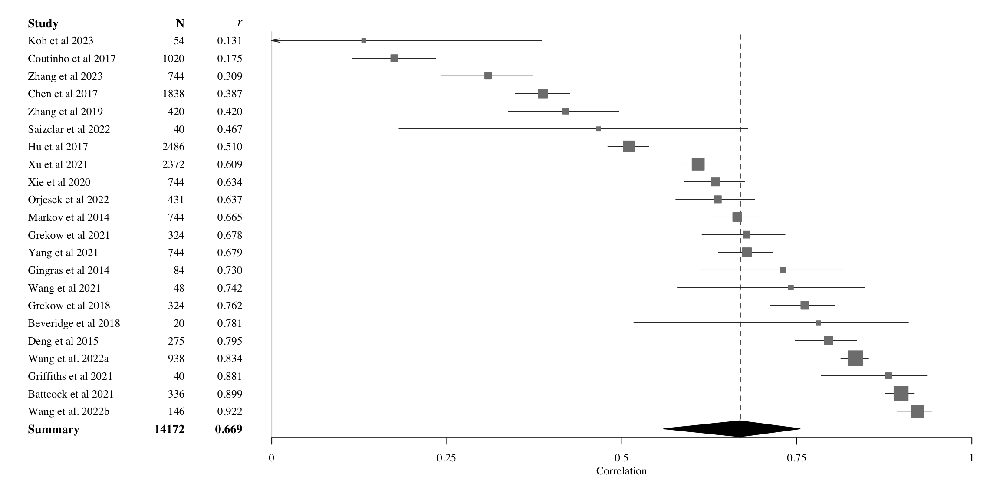

Flowchart of the study inclusions/eliminations.
A Meta-Analysis of Music Emotion Recognition Studies
Abstract
This is a meta-analysis of music emotion recognition. An analysis of the articles published between 2014-2024 containing models predicting either valence and arousal or emotion categories was carried out. A total of xx studies were included
Keywords
music, emotion, recognition, meta-analysis
Introduction
Emotional engagement is a key reason why people engage with music in their every day activities, and it is also why music is increasingly being used in various health applications (Agres et al., 2021; Juslin et al., 2022). In recent years, significant advances have been made in music information retrieval, particularly in music emotion recognition (MER) tasks (Gómez-Cañón et al., 2021; Panda et al., 2023). Improvements in available features, modeling techniques, and datasets have provided the field with opportunities to enhance the accuracy and reliability of predicting annotated emotions from audio. Over the past 25 years, numerous studies have established the types of emotions that listeners perceive and recognize in music. In the last 15 years, research has increasingly focused on tracing these recognized emotions back to specific musical components, such as expressive features (Lindström et al., 2003), structural aspects of music (Anderson & Schutz, 2022; Eerola et al., 2013; Grimaud & Eerola, 2022), acoustic features (Eerola, 2011; Panda et al., 2023, 2013; Saari et al., 2015; Y. H. Yang et al., 2008), or emergent properties revealed through deep learning techniques (Er & Aydilek, 2019; Sarkar et al., 2020).
However, there is no consensus on the extent to which emotions can be accurately recognized by computational models. The current literature presents a diverse and mixed picture regarding the success of models in predicting emotions within the affective circumplex – valence and arousal– (Russell, 1980) and in classifying distinct emotion categories (Fu et al., 2010).
A brief history of MER
Emotion has been widely discussed since the earliest artificial intelligence (AI) applications to music in the 1950s. Whereas early discourse largely focused on generative composition using computers (Zaripov & Russell, 1969), attention later shifted to creating methods to predict emotion using music’s structural cues. Novel techniques for information retrieval emerged in the 1950s and 1960s (Fairthorne, 1968), inspiring analogous developments for automated music analysis (Kassler (1966); Mendel (1969)). These developments would set the stage for early work in music emotion recognition (MER). Katayose et al. (1988) conducted the first study of this nature, creating an algorithm that associated emotions with analyzed chords to generate descriptions like “there is hopeful mood on chord from 69 to 97 [sic].” (Katayose et al., 1988, p. 1087).
In the early 2000s, several research groups conducted studies using regression (Friberg et al., 2002; Liu et al., 2003) and classification (Feng et al., 2003; Lu et al., 2005; Mandel et al., 2006) techniques to predict emotion in music audio or MIDI. Citing “MIR researchers’ growing interest in classifying music by moods” (Downie, 2008, p. 1), the Music Information Retrieval EXchange (MIREX) introduced Audio Mood Classification (AMC) to their rotation of tasks in 2007. In the first year, nine systems classified mood labels in a common data set, reaching 52.65% accuracy (SD = 11.19%). These events, along with growing interest in the burgeoning field of affective computing, would lead to an explosion of interest in MER research.1
Researchers have assessed regression and classification techniques on diverse corpora with features drawn from music (e.g., audio, MIDI, metadata) and participants (e.g., demographic information, survey responses, physiological signals, etc.). In one widely-cited study, Yang (2008) approached MER as a regression task, predicting the valence (i.e., the negative—positive emotional quality) and arousal (i.e., the calm—exciting quality) of 195 Chinese pop songs, achieving 62% accuracy for arousal but only 28% for valence (Y. H. Yang et al., 2008). This difference in prediction accuracy between dimensions has reappeared in several subsequent studies (e.g., Bai et al., 2016; Coutinho & Dibben, 2013), with some research suggesting this challenge reflects fewer well-established predictors and more individual differences for valence than arousal (Eerola, 2011; Yi-Hsuan Yang et al., 2007).
The semantic gap in MER
The difficulty in predicting valence reflects a broader challenge in information retrieval. Specifically, relations between low-level predictors from music and text and the perceptual phenomena they model remain poorly understood, reaching a ceiling in prediction accuracy (Celma, 2006). To address this so-called semantic gap, researchers have attempted to identify new feature sets with greater relevance to emotion (Chowdhury & Widmer, 2021; Panda et al., 2023), combine low-, mid-, and high-level features using multimodal data (Celma, 2006), or train neural networks to automatically learn features from audio (J. Zhang et al., 2016). Through these approaches, MER researchers attempt to shatter a so-called glass ceiling (Downie, 2008) by establishing central predictors for emotions. To date, however, no study has systematically compared results of these diverse approaches.
Aims
Our aim is to evaluate the predictive accuracy of two models of emotional expression in music: (a) models that predict track-specific coordinates in affective circumplex space (valence and arousal), and (b) models that classify discrete emotion categories. We focus on recent to identify key factors such as modeling techniques and features that significantly affect prediction accuracy. To achieve this, we conduct a meta-analysis of journal articles published in the past 10 years. Based on existing literature, we hypothesize that arousal will be predicted with higher accuracy than valence, as valence tends to be more context-dependent and challenging to model. For emotion classification, we expect simple utilitarian emotions (e.g., fear, anger) will be easier to predict than more complex social emotions (e.g., sadness, nostalgia).
Methods
We preregistered the meta-analysis plan on 21 June 2024 at OSF, https://osf.io/c5wgd, and the plan is also available at https://tuomaseerola.github.io/metaMER/preregistration/preregistration.html).
In the search stage, we used three databases, Web of Science, Scopus, and Open Alex to identify journal articles published between 2014 and 2024 containing keywords/title valence OR arousal OR classi* OR categor* OR algorithm AND music AND emotion AND recognition (see specific search strings for each database in SI). All searches were done in May 2024.
The initial search yielded 553 potential studies after excluding duplicate entries. We interactively screened them for relevance in three stages, resulting in 46 studies that passed our inclusion criteria (music emotion studies using classification or regression methods to predict emotion ratings of music using symbolic or audio features, and containing sufficient detail to convert results to \(r\) or \(MCC\) values see SI for a breakdown). After the screening stage, we defined a set of entities to extract characterising (i) music (genre, stimulus number [N], duration), (ii) features extracted (number, type, source, defined by (Panda et al., 2023)), (iii) model type (regression, neural network, SVM, etc.) and outcome measure (\(R^2\), MSE, MCC), (iv) model complexity (i.e., approximate number of features used to predict ratings), and (v) type of model cross-validation.
We converted all regression results from \(R^2\) values into \(r\) values for valence and arousal, and classification results into Matthews correlation coefficient (MCC, Chicco & Jurman, 2020). To increase consistency in our analyses, we excluded studies using incompatible features (e.g., spectrograms of audio files (Nag et al., 2022)), or dependent variables (e.g., one regression study analyzed valence and arousal together, but not separately (Chin et al., 2018)).
Quality Control
The search yielded studies of variable (and occasionally questionable) quality. To mitigate potentially spurious effects resulting from the inclusion of low-quality studies, we excluded studies lacking sufficient details about stimuli, analyzed features, or model architecture. Finally, we excluded studies published in journals of questionable relevance/quality, (e.g., Mathematical Problems in Engineering ceased publication following 17 retractions published between July and September 2024). Overall this step eliminated 12 studies, leaving us with 34 studies in total.
Study Encoding
To capture key details of each study, we added additional fields to BibTeX entries for each study. Fields included information about the genre/type of stimuli employed, along with their duration and number; the number of analyzed features; and the model type, validation procedure and output measures. Additionally, we included study results using executable R code containing custom functions for meta-analysis. For complete details about our encoding procedure, see studies/extraction_details.qmd .
Results
First we describe the overall pattern of data (regression vs classification, modelling techniques, feature numbers, stimulus numbers, datasets, and other details).
TABLE 1: Summary of data (part of analysis/preprocessing.qmd updated 21/1/2025)
| Regression | Classification | Total | |
|---|---|---|---|
| Study N | 22 | 12 | 34 |
| Model N | 204 | 86 | 290 |
| Techniques | Neural Nets (NN): 66 | 25 | 91 |
| Techniques | Flexible Discriminants (FD): 50 | 26 | 76 |
| Techniques | Linear Methods (LM): 62 | 13 | 75 |
| Techniques | Random Forests (RF): 14 | 10 | 34 |
| Techniques | KS, Add. & KNN (KS): 12 | 12 | 24 |
| Feature N | Min=3, Md=605, Max=6670 | Min=8, Md=126, Max=8904 | NA |
| Stimulus N | Min=20, Md=324, Max=2486 | Min=124, Md=300, Max=5192 | NA |
Although the total number of studies meeting the criteria described in the previous section is modest (34 in total), they encompass a large array of models (290 in total) with a relatively even distribution among the three most popular techniques: flexible discriminants, neural nets, and linear methods. The number of features and stimuli within these studies varies significantly, ranging from as few as three features (Battcock & Schutz, 2021) to a maximum of almost 9000 features (M. Zhang et al., 2023). The median number of features differs between regression (605) and classification (126) studies, primarily reflecting the nature of the datasets used in each approach. The number of stimuli is typically around 300-400 (with a median of 324 for regression and 300 for classification), though there is substantial variation, with the extremes from 20 stimuli in Beveridge & Knox (2018) to 5192 stimuli in Álvarez et al. (2023). There are also additional dimensions to consider, such as the type of cross-validation used, the music genres analyzed (whether a single genre, multiple genres, or a mix), the type of journal in which the studies were published, and the extraction tool used to extract features. However, these variables do not lend themselves to a simple summary, so we will revisit them during the interpretation and discussion stages.
We first report regression studies that predict valence and arousal.
Prediction success for affect dimensions
See analysis/analysis.qmd (updated 17/1/2025)
Since there are many models contained within each of the studies, we will report the results in two parts; We first give an overview of the results for all models, and then we focus on the best performing models of each study. The best performing model is the model within each study with the highest correlation coefficient. This reduction is done to avoid the issue of multiple models from the same study deflating the results as majority of the models included are relative modest baseline or alternative models that do not represent the novelty or content of the article.
Results for valence
Table 2 summarises the results for all models (All) as well as best performing models (Max) for each study for valence. The summary includes the number of models and observations, the correlation coefficient and its 95% confidence interval, the t-value and p-value for the correlation, the heterogeneity statistics \(\tau^2\) and \(I^2\), calculated through appropriate transformations (Fisher’s Z) for the correlation coefficient as part of a random-effects model using meta library (Balduzzi et al., 2019). We used Paule-Mandel estimator for between-study heterogeneity (Langan et al., 2019) and Knapp-Hartung (Knapp & Hartung, 2003) adjustments for confidence intervals. In this table we also report two subgroup analyses. One where we have divided the studies according to the number of features they contain (three categories based on quantiles to keep the group size comparable) and into five modelling techniques introduced earlier (Table 1).
Table 2. Meta-analytic diagnostic for all regression studies predicting valence from audio. See Table 1 for the acronyms of the modelling techniques.
| Concept | Models, obs | \(r\) [95%-CI] | \(t\) | \(p\) | \(\tau^2\) | \(I^2\) |
|---|---|---|---|---|---|---|
| Valence All | 102,60017 | 0.583 [0.541-0.623] | 21.40 | .0001 | 0.094 | 97.7% |
| Valence Max | 22,14172 | 0.669 [0.560-0.755] | 9.58 | .0001 | 0.148 | 98.4% |
| N Features | ||||||
| <18 F | 5,3036 | 0.811 [0.542-0.823] | - | - | 0.182 | 98.9% |
| 18-260 F | 11,7042 | 0.584 [0.534-0.931] | - | - | 0.133 | 97.6% |
| 260+ F | 5,3494 | 0.710 [0.542-0.823] | - | - | 0.044 | 97.2% |
| Techniques | ||||||
| KS | 1,1838 | 0.466 [-0.634-0.942] | - | - | 0.0185 | 95.1% |
| LM | 8,1762 | 0.797 [0.614-0.899] | - | - | 0.1370 | 96.4% |
| FD | 6,4993 | 0.656 [0.484-0.779] | - | - | 0.0574 | 96.9% |
| NN | 4,2249 | 0.393 [-0.355-0.835] | - | - | 0.0761 | 97.1% |
| RF | 3,3330 | 0.750 [0.292-0.928] | - | - | 0.093 | 98.5% |
The results indicate that valence can generally be predicted with moderately accuracy, with the best model from each of the 22 studies achieving an average correlation of r = 0.669 (95% CI: 0.560-0.755), called “valence Max” in Table 2. However, when considering all models across these studies (n = 102), the overall prediction rate drops significantly to r = 0.583. We argue that this lower correlation is likely due to the inclusion of baseline models reported in these studies, which may not reflect the true success of the task for the purposes of our analysis.
Further analysis of between-study heterogeneity, as indexed by the \(\tau^2\) (0.148) and Higgins & Thompson’s \(I^2\) statistic (Higgins & Thompson, 2002) at 98.4%, reveals substantial heterogeneity. Since \(I^2\) is heavily influenced by study size (with larger N leading to lower sampling error), its value may be less insightful in this context. In contrast, \(\tau^2\), which is less sensitive to the number of studies and directly linked to the outcome metric (r), provides a more reliable measure of heterogeneity in this case. Also, we note that because the overall heterogeneity in the data is high, we are cautious in our interpretation of the publication bias (Van Aert et al., 2016).
To better understand the effects across studies and the nature of the observed heterogeneity, Figure 2 presents (A) a forest and (B) funnel plot of the random-effects model, based on the best-performing models from all studies. In terms of the forest plot, the range of prediction values (correlations) is broad, spanning from 0.13 to 0.92, with all studies except Koh et al. (2023) demonstrating evidence of positive correlations. A mean estimate of 0.67 is achieved by 15 out of the 22 models. While the confidence intervals are generally narrow due to the large sample sizes in each study, there are exceptions, such as smaller sample sizes in Beveridge & Knox (2018) (n = 20), and in Griffiths et al. (2021) (n = 40). The funnel plot in panel B of Figure 2 shows clustering at the top of the plot (studies with low standard error) and no assumed larger diversity in the correlations when the error rates increase. However, there is no clear asymmetry in the plot, verified by non-significant Egger’s test (\(\beta\)=5.05, CI95% -0.99-11.09, t = 1.64, p = 0.112, Egger et al. (1997)). Coming back to the mean of valence correlation of 0.67 by all studies and the possible impact of study heterogeneity on this estimation, we also calculated the correlation without the studies that lie outside the 95% CI for pooled effect. This left 12 studies in the data and resulted in the meta-analytical pooled correlation of 0.686 (CI95% 0.635-0.731). In other words, despite the large variation in the correlations and standard errors across the studies, this variation in itself does not seem to be a significant driver behind the overall effect.

To gain insights into the factors contributing to the wide range of model success, we explored several ways of splitting the data. Table 2 presents two key splits: one based on the number of features used, which we hypothesized might influence model performance, and another based on the modeling techniques employed. In terms of feature sets, we categorized them into three groups: few features (<18), a large number of features (18–260), and massive feature sets (260+). Interestingly, models (4 in total) using a relatively small number of features (<18) performed best (r = 0.817, 95% CI: 0.361–0.958) compared to those utilizing larger feature sets. However, it is worth noting that the models using massive feature sets (260+, 7 studies in total) also performed well (r = 0.702), achieving better and more consistent results than the overall prediction rate (r = 0.669). This observation is supported by the lowest heterogeneity index for the massive feature set group (\(\tau^2\) = 0.029), indicating more consistent results across studies. Studies with large number of features (18-260 features, 10 studies in total) delivered the worst results, r = 0.586 (95% CI: 0.360–0.748). Despite the fluctuation in the overall model accuracy between the number of features, the differences are not substantially large to pass the test of statistical significance (Q(2) = 3.47, p=.176).
When analyzing the studies across the five modeling techniques used, the prediction do differ significantly (Q(4) = 45.7, p < .0001). Notably, linear models (LM) and flexible discriminants (FD) were the most common, with 8 and 6 studies, respectively, allowing for more confident interpretations. Linear models achieved the highest prediction rate (r = 0.784, 95% CI: 0.625–0.881), though this may be influenced by the smaller datasets typically used in these studies. These studies also exhibited substantially higher heterogeneity (\(\tau^2\) = 0.137) compared to other techniques, where \(\tau^2\) values were less than half of this. Flexible discriminants performed at a similar level to the overall model average (r = 0.656, 95% CI: 0.484–0.779). While there were only 3 studies involving random forests, these performed well, achieving r = 0.750, 95% CI: 0.292–0.928), and the relatively poor performance of the neural network models represented in four studies (r = 0.340, 95% CI: -0.097–0.668) is difficult to explain without a deeper examination of the specific model architectures and the stimuli used in these studies. Kernel smoothing and KNN models (with only 1 study represented) achieved relatively poor success as well, r = 0.383, 95% CI: 0.348–0.426).
We also ran the sub-grouping analyses across a combination of stimulus genres (single vs mixed) and number of the features to explore where the differences in the model prediction rates might lie. For this purpose, we grouped the studies into small single genre/multigenre studies, medium single genre/multigenre studies, and medium-large single genre/multigenre studies, and huge multigenre studies. The small single genre/multigenre studies generally performed best (r = 0.836), followed by huge multi-genre studies (r = 0.693) while the medium and medium-large sized studies performance was between close the overall average (medium-large, r = 0.768 and medium r = 0.607). The heterogeneity was lowest in the huge multigenre studies (\(\tau^2\) = 0.013) and highest in the small single genre/multigenre studies (\(\tau^2\) = 0.318).
These comparisons of sub-groupings are also influenced by other factors, such as the type of journal (psychology vs engineering) or whether the objective is to explain or predict emotions. Although the sub-groupings result in an uneven distribution of studies and observations, they still offer valuable insights. Despite these caveats, the two main sub-groupings portrayed in Table 2 enable us to identify valuable differences related to model success across the studies.
Results for arousal
Moving on the arousal, we carry out the same meta-analytical analysis applying the random-effects model to arousal. Table 3 describes the broad pattern of results in tabular format, and Figure 3 illustrates the spread and heterogeneity of all studies for arousal. The overall correlation across the studies using the best performing model out of each study (Max) is 0.809 (CI95% 0.740-0.860). If we examine all the models reported in each study, the correlation drops marginally, to 0.791 (CI95% 0.770-0.810), despite this analysis includes about four times as many models as taking the best model out of each study. For arousal, even the baseline models seem to be performing on a relative high level. However, the indicators of heterogeneity are again high (\(\tau^2\) = 0.141 and \(I^2\)=97.9%), which suggests that summary may be misleading. However, the analysis of asymmetry does not reveal significant issues (Eggers test, \(\beta\) = 0.789 95%CI -4.87-6.45, t = 0.273, p = 0.788). If we remove the studies that are outside the 95%CI in heterogeneity, leaves this 13 studies in the summary that has r = 0.826 (95%CI 0.806-0.845) with \(\tau^2\) = 0.0042 and \(I^2\) = 76.8%. In other words, no material difference to the results obtained with all 22 studies.
Table 3. Meta-analytic diagnostic for all regression studies predicting arousal from audio.
| Concept | Models, obs | \(r\) [95%-CI] | \(t\) | \(p\) | \(\tau^2\) | \(I^2\) |
|---|---|---|---|---|---|---|
| Arousal All | 102, 60017 | 0.791 [0.770-0.810] | 39.9 | 0.0001 | 0.069 | 96.2% |
| Arousal Max | 22, 14172 | 0.809 [0.740-0.860] | 13.6 | 0.0001 | 0.141 | 97.9% |
| N Features | ||||||
| <18 F | 4, 3016 | 0.817 [0.361-0.958] | 0.2295 | 99.2% | ||
| 18-260 F | 10, 4222 | 0.586 [0.356-0.748] | 0.1542 | 96.9% | ||
| 260+ F | 7, 6190 | 0.702 [0.612-0.774] | 0.0285 | 96.6% | ||
| Techniques | ||||||
| KS | 1, 1838 | 0.819 [0.803-0.833] | - | - | ||
| LM | 8, 1762 | 0.881 [0.808-0.928] | 0.0846 | 93.3% | ||
| FD | 6, 4993 | 0.808 [0.644-0.901] | 0.1125 | 98.0% | ||
| NN | 4, 2249 | 0.533 [0.328-0.691] | 0.0190 | 85.8% | ||
| RF | 3, 3330 | 0.809 [0.733-0.864] | 0.0025 | 65.4% |
Figure 3 presents (A) a forest and (B) funnel plot of the random-effects model of the best-performing models from all studies. Similarly to valence, the range of correlations is also wide for arousal, ranging from 0.35 to 0.95, with all studies demonstrating evidence of positive correlations. A mean estimate of 0.81 or higher is achieved by the majority (15 out of the 22 models). Due to large sample in ost studies, the confidence intervals are narrow, although the exceptions (\(N < 55\)) are clearly visible (Beveridge & Knox, 2018; Griffiths et al., 2021; Koh et al., 2023; Saiz-Clar et al., 2022; Wang et al., 2021). The funnel plot in panel B illustrates the limited range of the correlations and show heavy clustering at the top of the plot (studies with low standard error). There is no clear asymmetry in the plot, verified by non-significant Egger’s test reported above.
The analysis of the subdivision of studies shows that there is no significant differences between the studies using different number of features (Q(2) = 3.47, p = .176) despite the differing means (r = 0.817 for studies with less than 18 features, r = 0.586 for 18 to 260 features, and r = 0.702 for studies utilising over 260 features). The differences in the techniques, however, does show variance between subgroups that is statistically significant (Q(4) = 50.47, p < .0001), where at least Neural Nets achieve poor prediction of arousal (r = 0.533) in comparison to other techniques. The caveat of this subgroup analysis is the small number of observations for five techniques. When other subgroupings were explored, such as the type of journal (Engineering with 13 studies vs Psychology with 9 studies), no significant differences were observed (Q(1) = 0.94, p = .333).

Classification studies
Summary of details contained in Table 1, but summarise at least the categories predicted before moving onto the main findings.
Table 4. Meta-analytic diagnostic for all classification studies predicting emotion categories from audio.
| Model | Models, obs | \(r\) [95%-CI] | \(t\) | \(p\) | \(\tau^2\) | \(I^2\) |
|---|---|---|---|---|---|---|
| All | 89,87347 | 0.8074 [0.7681; 0.8407] | 21.4 | 0.0001 | 0.2415 | 99.7% |
| Max | 14,17184 | 0.8564 [0.7386; 0.9234] | 8.32 | 0.0001 | 0.329 | 99.8% |
Heterogeneity issues
Figure 3. Forest plot of arousal prediction (Max?) (Unless we do some custom plotting)
- Figure Optional: Funnel plot (I haven’t seen this yet)
secondary datasets, include a table, with an index of which studies/counts
TABLE
Conclusion and Discussion
There has been a considerable number of studies published involving MER models (N=96/46 full text articles considered), but in many cases the reporting standards or other quality issues or the lack of dedicated focus on music led us to reject a substantial proportion of studies. At the end, 34 studies remained in the analysis that overall reported xxxxx models.
Concise summary of what we did and found
Main outcomes
- Arousal is easier to predict (r = 0.7627) than valence (r = 0.6236), as we predicted. The glass ceiling seems to be at …
- Classification …
- Model accuracy is surprisingly little affected by the number of features (?) or modelling technique (?).
- Some of the complex state-of-the-art techniques (e.g., NNs) do not deliver impressive improvements over older techniques (e.g., SVR, RF)
- Variation in study/model/data quality is large and can be seen in heterogenuity and the amount of studies eliminated
[this is the discussion section]
Calls for action/points to improve in such studies
- Documentation the details in full (features, stimuli, model details, cross-validation)
- Quality of the underlying data (emotion ratings, classes, or even stimulus properties?
- Generalisibility of the models (some studies such as X and Y address this by applying the models across several datasets)
- Diversity in the evaluative aspects of studies: overfitting, numerous ways of cross-validating, not sharing data or analysis scripts, not reporting in the same way
- What proportion of stimuli are Western music, and what genres tend to dominate?
Funding statement
CA was funded by Mitacs Globalink Research Award (Mitacs & British High Commission - Ottawa, Canada).
Competing interests statement
There were no competing interests.
Open practices statement
Study preregistration, data, analysis scripts and supporting information is available at Github, https://tuomaseerola.github.io/metaMER.
Acknowledgements
We thank Greggs food-on-the-go retailer for sustaining the work with affordable sandwiches and coffee.
References
Agres, K. R., Schaefer, R. S., Volk, A., Van Hooren, S., Holzapfel, A., Dalla Bella, S., Müller, M., De Witte, M., Herremans, D., Ramirez Melendez, R., et al. (2021). Music, computing, and health: A roadmap for the current and future roles of music technology for health care and well-being. Music & Science, 4, 2059204321997709.
Álvarez, P., Quirós, J. G. de, & Baldassarri, S. (2023). RIADA: A machine-learning based infrastructure for recognising the emotions of spotify songs [Article]. International Journal of Interactive Multimedia and Artificial Intelligence, 8(2), 168–181. https://doi.org/10.9781/ijimai.2022.04.002
Anderson, C. J., & Schutz, M. (2022). Exploring historic changes in musical communication: Deconstructing emotional cues in preludes by bach and chopin. Psychology of Music, 50(5), 1424–1442.
Bai, J., Peng, J., Shi, J., Tang, D., Wu, Y., Li, J., & Luo, K. (2016). Dimensional music emotion recognition by valence-arousal regression. 2016 IEEE 15th International Conference on Cognitive Informatics & Cognitive Computing (ICCI* CC), 42–49.
Balduzzi, S., Rücker, G., & Schwarzer, G. (2019). How to perform a meta-analysis with R: A practical tutorial. Evidence-Based Mental Health, 22, 153–160.
Battcock, A., & Schutz, M. (2021). Individualized interpretation: Exploring structural and interpretive effects on evaluations of emotional content in bach’s well tempered clavier. JOURNAL OF NEW MUSIC RESEARCH, 50(5), 447–468. https://doi.org/10.1080/09298215.2021.1979050
Beveridge, S., & Knox, D. (2018). Popular music and the role of vocal melody in perceived emotion. PSYCHOLOGY OF MUSIC, 46(3), 411–423. https://doi.org/10.1177/0305735617713834
Celma, O. (2006). Foafing the music: Bridging the semantic gap in music recommendation. International Semantic Web Conference, 927–934.
Chicco, D., & Jurman, G. (2020). The advantages of the matthews correlation coefficient (MCC) over F1 score and accuracy in binary classification evaluation. BMC Genomics, 21, 1–13.
Chin, Y.-H., Wang, J.-C., Wang, J.-C., & Yang, Y.-H. (2018). Predicting the probability density function of music emotion using emotion space mapping. IEEE Transactions on Affective Computing, 9(4), 541 549. https://doi.org/10.1109/TAFFC.2016.2628794
Chowdhury, S., & Widmer, G. (2021). On perceived emotion in expressive piano performance: Further experimental evidence for the relevance of mid-level perceptual features. International Society for Music Information Retrieval Conference (ISMIR 2023).
Coutinho, E., & Dibben, N. (2013). Psychoacoustic cues to emotion in speech prosody and music. Cognition & Emotion, 27(4), 658–684.
Downie, J. S. (2008). The music information retrieval evaluation exchange (2005–2007): A window into music information retrieval research. Acoustical Science and Technology, 29(4), 247–255.
Eerola, T. (2011). Are the emotions expressed in music genre-specific? An audio-based evaluation of datasets spanning classical, film, pop and mixed genres. Journal of New Music Research, 40(4), 349–366. https://doi.org/10.1080/09298215.2011.602195
Eerola, T., Friberg, A., & Bresin, R. (2013). Emotional expression in music: Contribution, linearity, and additivity of primary musical cues. Frontiers in Psychology, 4(487). https://doi.org/10.3389/fpsyg.2013.00487
Egger, M., Smith, G. D., Schneider, M., & Minder, C. (1997). Bias in meta-analysis detected by a simple, graphical test. Bmj, 315(7109), 629–634.
Er, M. B., & Aydilek, I. B. (2019). Music emotion recognition by using chroma spectrogram and deep visual features. International Journal of Computational Intelligence Systems, 12(2), 1622–1634.
Fairthorne, R. A. (1968). Towards information retrieval.
Feng, Y., Zhuang, Y., & Pan, Y. (2003). Popular music retrieval by detecting mood. Proceedings of the 26th Annual International ACM SIGIR Conference on Research and Development in Informaion Retrieval, 375–376.
Friberg, A., Schoonderwaldt, E., Juslin, P. N., & Bresin, R. (2002). Automatic real-time extraction of musical expression. International Computer Music Conference, ICMC 2002, Gothenburg, Sweden, 365–367.
Fu, Z., Lu, G., Ting, K. M., & Zhang, D. (2010). A survey of audio-based music classification and annotation. IEEE Transactions on Multimedia, 13(2), 303–319.
Gómez-Cañón, J. S., Cano, E., Eerola, T., Herrera, P., Hu, X., Yang, Y.-H., & Gómez, E. (2021). Music emotion recognition: Toward new, robust standards in personalized and context-sensitive applications. IEEE Signal Processing Magazine, 38(6), 106–114. https://doi.org/10.1109/MSP.2021.3106232
Griffiths, D., Cunningham, S., Weinel, J., & Picking, R. (2021). A multi-genre model for music emotion recognition using linear regressors. JOURNAL OF NEW MUSIC RESEARCH, 50(4), 355–372. https://doi.org/10.1080/09298215.2021.1977336
Grimaud, A. M., & Eerola, T. (2022). An interactive approach to emotional expression through musical cues. Music & Science, 5, 1–23. https://doi.org/https://doi.org/10.1177/20592043211061745
Higgins, J. P., & Thompson, S. G. (2002). Quantifying heterogeneity in a meta-analysis. Statistics in Medicine, 21(11), 1539–1558.
Juslin, P. N., Sakka, L. S., Barradas, G. T., & Lartillot, O. (2022). Emotions, mechanisms, and individual differences in music listening: A stratified random sampling approach. Music Perception: An Interdisciplinary Journal, 40(1), 55–86.
Kassler, M. (1966). Toward musical information retrieval. Perspectives of New Music, 59–67.
Katayose, H., Imai, M., & Inokuchi, S. (1988). Sentiment extraction in music. 9th International Conference on Pattern Recognition, 1083–1084.
Knapp, G., & Hartung, J. (2003). Improved tests for a random effects meta-regression with a single covariate. Statistics in Medicine, 22(17), 2693–2710.
Koh, E. Y., Cheuk, K. W., Heung, K. Y., Agres, K. R., & Herremans, D. (2023). MERP: A music dataset with emotion ratings and raters’ profile information. SENSORS, 23(1). https://doi.org/10.3390/s23010382
Langan, D., Higgins, J. P., Jackson, D., Bowden, J., Veroniki, A. A., Kontopantelis, E., Viechtbauer, W., & Simmonds, M. (2019). A comparison of heterogeneity variance estimators in simulated random-effects meta-analyses. Research Synthesis Methods, 10(1), 83–98.
Lindström, E., Juslin, P. N., Bresin, R., & Williamon, A. (2003). "Expressivity comes from within your soul”: A questionnaire study of music students’ perspectives on expressivity. Research Studies in Music Education, 20(1), 23–47.
Liu, D., Lu, L., & Zhang, H.-J. (2003, January). Automatic Mood Detection from Acoustic Music Data. Proc. ISMIR 2003; 4th Int. Symp. Music Information Retrieval.
Lu, L., Liu, D., & Zhang, H.-J. (2005). Automatic mood detection and tracking of music audio signals. IEEE Transactions on Audio, Speech, and Language Processing, 14(1), 5–18.
Mandel, M. I., Poliner, G. E., & Ellis, D. P. (2006). Support vector machine active learning for music retrieval. Multimedia Systems, 12(1), 3–13.
Mendel, A. (1969). Some preliminary attempts at computer-assisted style analysis in music. Computers and the Humanities, 41–52.
Nag, S., Basu, M., Sanyal, S., Banerjee, A., & Ghosh, D. (2022). On the application of deep learning and multifractal techniques to classify emotions and instruments using indian classical music. Physica A: Statistical Mechanics and Its Applications, 597. https://doi.org/10.1016/j.physa.2022.127261
Panda, R., Malheiro, R., & Paiva, R. P. (2023). Audio features for music emotion recognition: A survey. IEEE Transactions on Affective Computing, 14(1), 68–88. https://doi.org/10.1109/TAFFC.2020.3032373
Panda, R., Malheiro, R., Rocha, B., Oliveira, A. P., & Paiva, R. P. (2013). Multi-modal music emotion recognition: A new dataset, methodology and comparative analysis. 10th International Symposium on Computer Music Multidisciplinary Research (CMMR 2013), 570–582.
Russell, J. A. (1980). A circumplex model of affect. Journal of Personality and Social Psychology, 39(6), 1161–1178.
Saari, P., Eerola, T., Barthet, M., Fazekas, G., & Lartillot, O. (2015). Genre-adaptive semantic computing and audio-based modelling for music mood annotation. IEEE Transactions on Affective Computing, 7(2), 122–135.
Saiz-Clar, E., Angel Serrano, M., & Manuel Reales, J. (2022). Predicting emotions in music using the onset curve. PSYCHOLOGY OF MUSIC, 50(4), 1107–1120. https://doi.org/10.1177/03057356211031658
Sarkar, R., Choudhury, S., Dutta, S., Roy, A., & Saha, S. K. (2020). Recognition of emotion in music based on deep convolutional neural network. Multimedia Tools and Applications, 79(1), 765–783.
Van Aert, R. C., Wicherts, J. M., & Assen, M. A. van. (2016). Conducting meta-analyses based on p values: Reservations and recommendations for applying p-uniform and p-curve. Perspectives on Psychological Science, 11(5), 713–729.
Wang, X., Wei, Y., Heng, L., & McAdams, S. (2021). A cross-cultural analysis of the influence of timbre on affect perception in western classical music and chinese music traditions. FRONTIERS IN PSYCHOLOGY, 12. https://doi.org/10.3389/fpsyg.2021.732865
Yang, Y. H., Lin, Y. C., Su, Y. F., & Chen, H. H. (2008). A regression approach to music emotion recognition. IEEE Transactions on Audio Speech and Language Processing, 16(2), 448–457.
Yang, Yi-Hsuan, Su, Y.-F., Lin, Y.-C., & Chen, H. H. (2007). Music emotion recognition: The role of individuality. Proceedings of the International Workshop on Human-Centered Multimedia, 13–22.
Zaripov, R. K., & Russell, J. (1969). Cybernetics and music. Perspectives of New Music, 115154.
Zhang, J., Huang, X., Yang, L., & Nie, L. (2016). Bridge the semantic gap between pop music acoustic feature and emotion: Build an interpretable model. Neurocomputing, 208, 333–341.
Zhang, M., Zhu, Y., Zhang, W., Zhu, Y., & Feng, T. (2023). Modularized composite attention network for continuous music emotion recognition. MULTIMEDIA TOOLS AND APPLICATIONS, 82(5), 7319–7341. https://doi.org/10.1007/s11042-022-13577-6
Footnotes
The best-performing model to date reached 69.83 % in the 2017 competition (Park et al., 2017)@park2017representation.↩︎